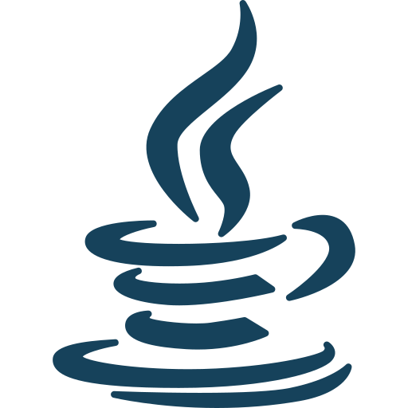
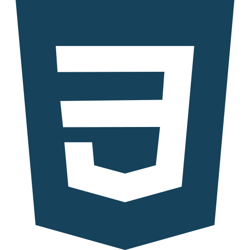
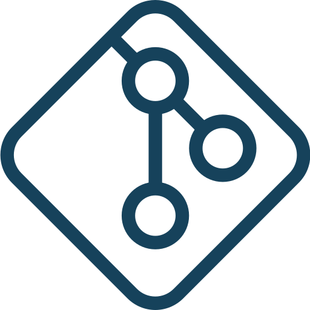

Who am I?
Hi, I'm Krisna Bou, a skilled software developer with experience across many languages, frameworks and technologies. I'm a recent graduate of the University of Queensland, focused on opportunities to apply my passion for backend systems, cloud services, and full-stack development.
I'm a quick learner and collaborate closely with clients to create efficient, scalable, and user-friendly solutions that solve real-world problems.






